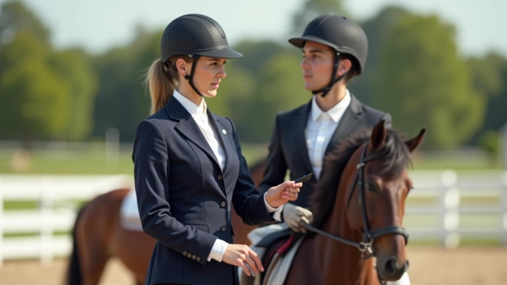
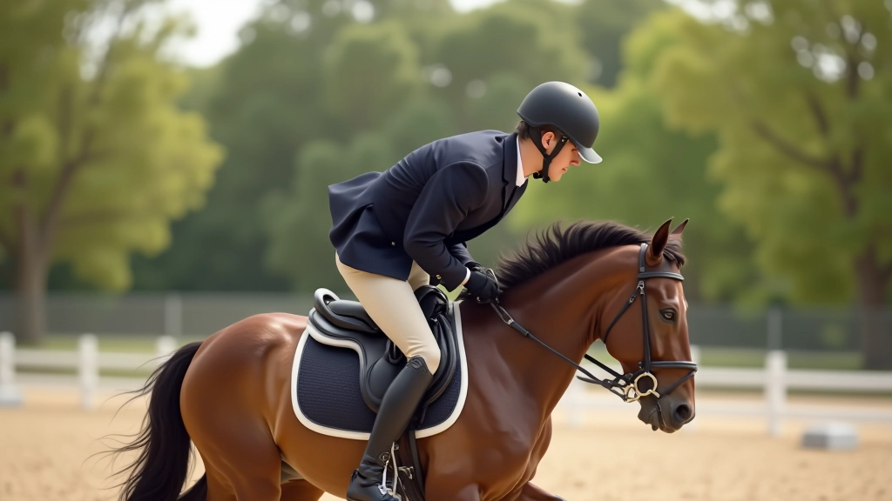
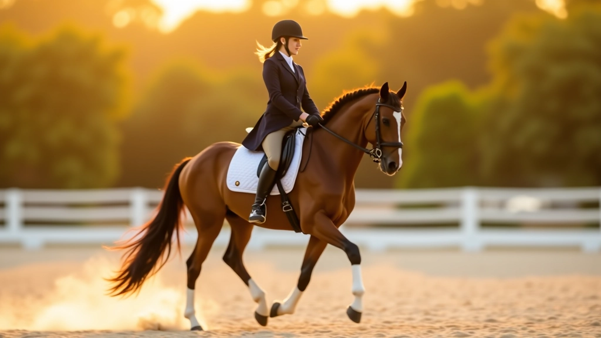
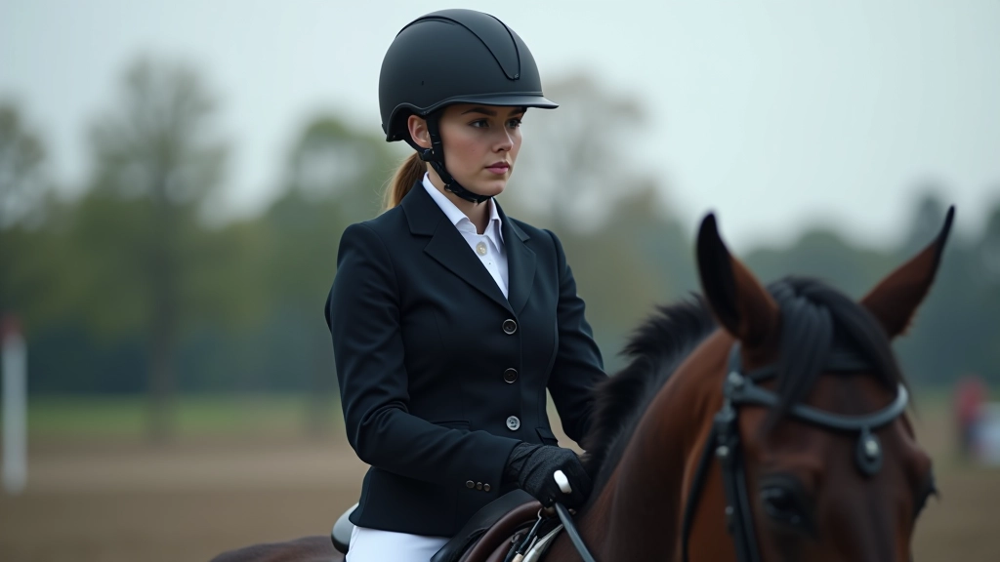

إتقان التوقف: تحكم كامل وثبات
تقنيات متقدمة لتعليم حصانك التوقف المثالي مع الحفاظ على الانتباه والاستجابة للإشارات
دليل شامل لتعليم حصانك انتقالات المشي الأساسية مع التركيز على التحكم والثبات والاستجابة السريعة


الكاتب
فريق المحتوى التحريري
كتبه فريق إسطبل النيل التحريري، المتخصص في تقديم إرشادات عملية وموثوقة عن تدريب الخيل والترويض.
انتقالات المشي هي أول خطوة في رحلة تدريب الحصان على الترويض. لا تتعلق الأمر فقط بالحركة من مكان لآخر — بل عن بناء أساس قوي من الثقة والاستجابة بين الفارس والحصان. عندما يتعلم الحصان الانتقال بسلاسة، فهو يتعلم أيضاً الاستماع والطاعة.
المشي هو أبطأ الحركات الثلاث الأساسية. هذا يعطيك وقتاً كافياً لتصحيح الأخطاء والتدرب على التقنية الصحيحة. يمكنك رؤية ما يفعله الحصان بوضوح أكبر من الركض أو القفز. ستتعلم قراءة جسد الحصان بشكل أفضل هنا.
النقطة الأساسية: الانتقالات الجيدة تبدأ من المشي. لا تحاول الانتقال إلى تمارين أعقد قبل إتقان هذه الخطوة.

قبل أي شيء، تأكد من أن حصانك مستريح وركّز. يمكن أن يشعر الحصان بتوترك. ابدأ بجلسة تدفئة بسيطة — مشي حر لمدة 10 دقائق على الأقل. هذا يساعد العضلات على الاسترخاء ويحضر الحصان ذهنياً للعمل.
الموضع الصحيح للفارس مهم جداً. اجلس في المنتصف من السرج. أكتافك متراجعة قليلاً. يديك مسترخية لكن مع اتصال واضح مع فم الحصان. رجليك تحتك مباشرة — لا تدفعيهما للأمام. هذا الموضع يعطيك التحكم والتوازن معاً.


هنا تأتي الخطوة الفعلية. أنت تريد الحصان أن ينتقل من وقفة ثابتة إلى مشي منتظم. استخدم ساقيك — ليس بقسوة، بل بضغط ثابت. في نفس الوقت، أرخِ يديك قليلاً للسماح للحصان بتحريك رقبته. الحصان يجب أن يشعر بأنك تطلب منه الحركة.
الخطوات الأولى ستكون صغيرة. لا تتوقع خطوات كبيرة في البداية. المهم أن تكون الحركة سلسة ومنتظمة. راقب إيقاع خطواته. هل يمشي بالتساوي على الجانبين؟ هل يتردد أم يتحرك بثقة؟ هذه المعلومات ستساعدك في التعديل.
تذكر: لا تسحب الأسنان للخلف. الانتقال السلس يحدث عندما يتحرك الحصان للأمام، وليس عندما تسحبه للخلف.
التكرار هو المفتاح. لكن لا تفرط في التدريب. جلسة تدريب جيدة مدتها 30-45 دقيقة كافية. في كل جلسة، جرب الانتقال 5-10 مرات. بعد كل محاولة، امنح الحصان فترة راحة قصيرة. دع عضلاته تسترخي.
ستلاحظ تحسناً تدريجياً على مدى الأسابيع. قد يستغرق الأمر 3-4 أسابيع قبل أن تشعر بانتقال سلس حقاً. لا تقلق. كل حصان يتعلم بسرعة مختلفة. بعض الخيول تتعلم في أسبوعين، وبعضها يحتاج إلى شهر. الصبر هو الفضيلة هنا.

هذا الدليل يقدم معلومات تعليمية عامة عن تدريب الخيل. كل حصان فريد ولديه احتياجات واحتياجيات خاصة به. إذا واجهت مشاكل في التدريب أو لاحظت أي علامات إصابة أو ألم، يُرجى استشارة مدرب متخصص أو طبيب بيطري. السلامة دائماً تأتي أولاً — لك وللحصان معاً.
بعد إتقانك للانتقالات الأساسية من الوقفة إلى المشي، ستكون مستعداً للمرحلة التالية. تحسين جودة المشي نفسه، ثم الانتقالات إلى الركض. لكن لا تتسرع. الأساس القوي الذي تبنيه الآن سيساعدك في كل شيء يأتي بعده.
استمتع بالعملية. التدريب يجب أن يكون ممتعاً لك وللحصان. كل يوم تعلم جديد. كل جلسة تقرب الحصان والفارس من بعضهما أكثر. هذا هو جمال الترويض الحقيقي.
استمر في تطورك مع هذه الأدلة الموصى بها
تقنيات متقدمة لتعليم حصانك التوقف المثالي مع الحفاظ على الانتباه والاستجابة للإشارات

تعرّف على المشاكل الشائعة التي يواجهها المتدربون وكيفية تصحيحها لتحسين جودة الانتقالات

خطة تدريب منظمة تغطي جميع مراحل التطور من التوقف البسيط إلى الانتقالات المتقدمة